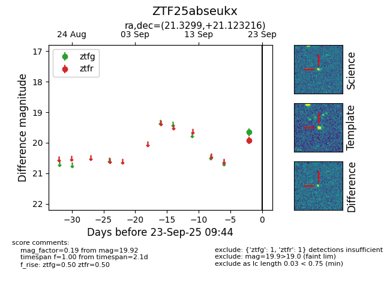

FINK: ZTF25abseukx
Lasair: ZTF25abseukx
ALeRCE: ZTF25abseukx
ZTF25abseukx (ztf,fink)
equatorial (ra, dec) = (21.3299,+21.12322)
galactic (l, b) = (133.4308,-41.05679)

last ztfg=19.65, ztfr=19.92
1 ztfg, 1 ztfr detections